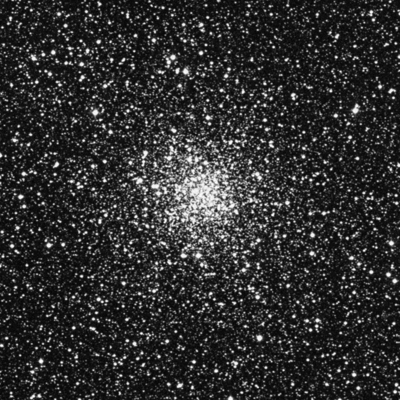
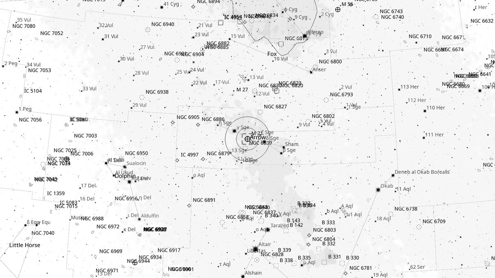
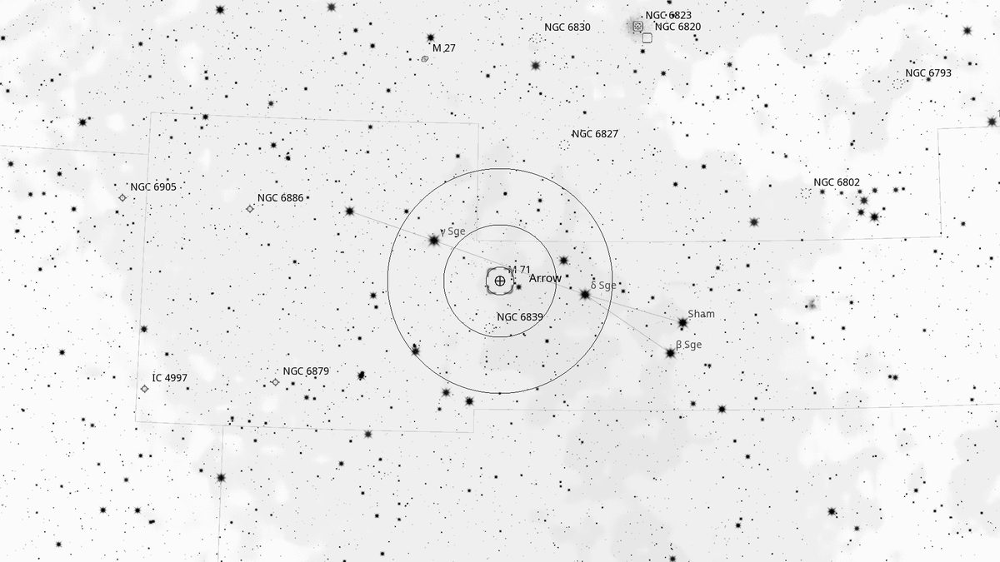
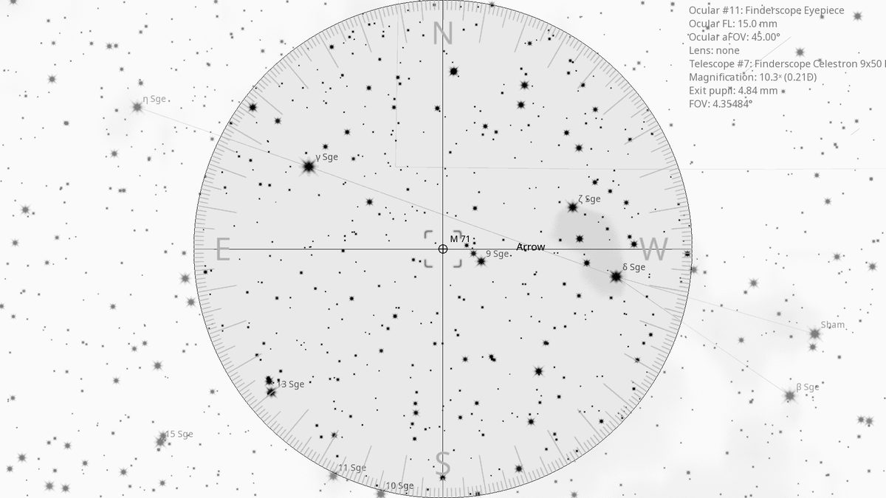
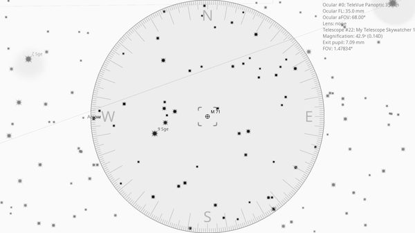

M 71 (GC)
| R.A. | Dec. | Size | Mag | SB | Cnt.St | Type | Distance | Chart |
|---|---|---|---|---|---|---|---|---|
| 19h 53m 46.7s | +18° 46′ 32.7″ | 7.2′ | 8.4 | 11.9 | X-XI | GC | -- | -- |

Background
M71 is an unusually loose globular cluster 13,000 light-years away in the small constellation Sagitta. For decades it was classified as a dense open cluster — its loose, irregular structure bridges the visual divide between open and globular clusters.
My Observing Notes
25-cm (Meade 10-inch LX200, The Coffee Grinder): Find via δ and γ Sagittae; the glow picks up in the finderscope between them. What sets this globular apart is its irregular shape and uniformity in brightness. Bright at mag 8.2, brighter stars in the halo partially resolve. The loose irregular form is more akin to a compact open cluster like M11 than a typical globular — not your classic GC, and a really enjoyable view. Worth returning to with a higher magnification.(Saturday, August 2025)
References
Charts



